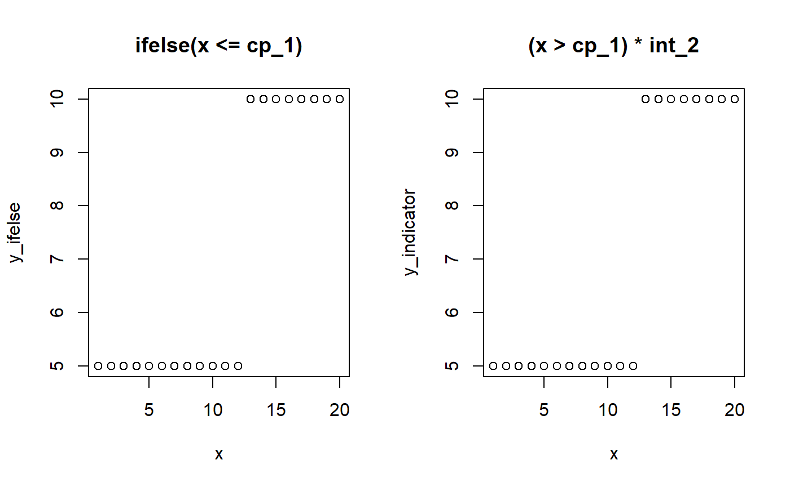
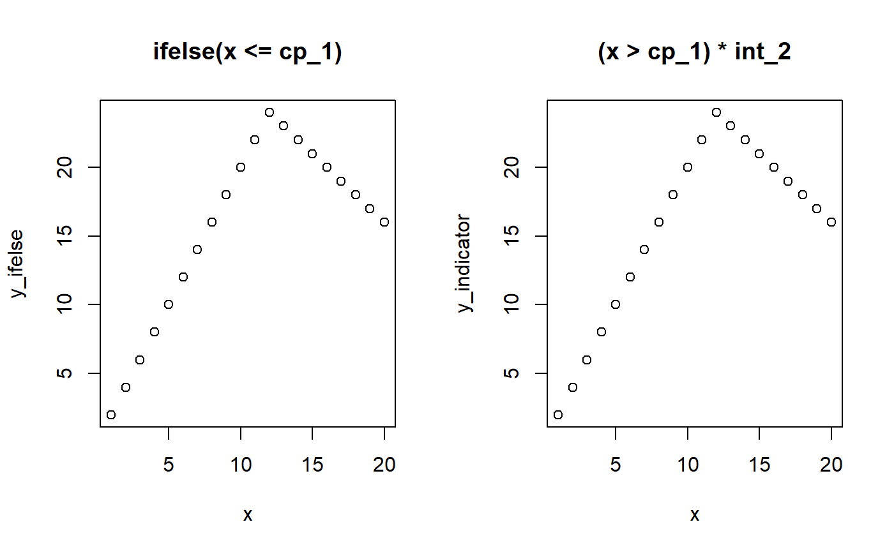
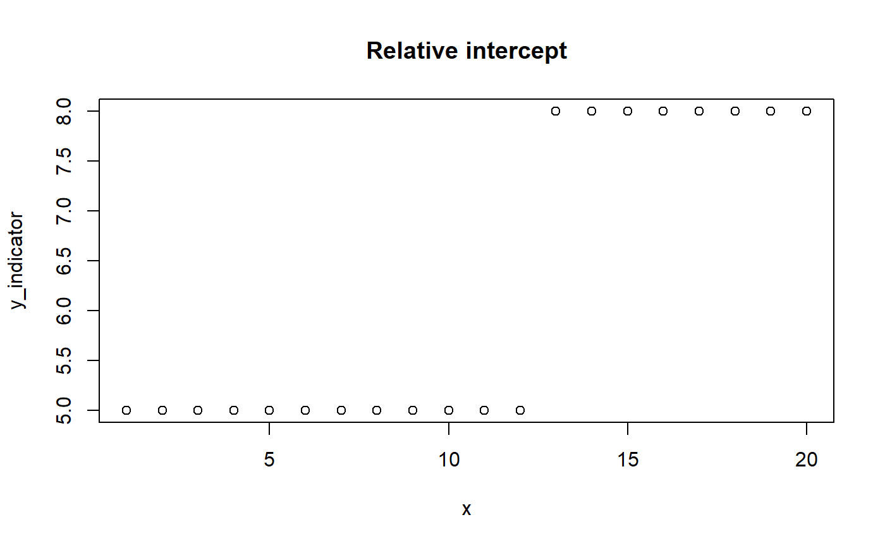

formulas.Rmdmcp takes a list of formulas, and defines the change point as the point on the x-axis where the data shifts from being generated by one formula to the next. So with N formulas, you have N - 1 change points. A list with just one formula thus correspond to normal regression with 0 change points.
The formulas are called “segments” because they divide the (observed) x-axis into N segments. # Formula format for segments The format of each segment is generally response ~ changepoint ~ linear_predictors, except for the first segment where there is no change point (response ~ linear_predictors).
1 for a population-level change point or 1 + (1|group) varying change points sampled around the population-level change point.0 (no change in intercept), 1 (change in intercept), and any column in your data which you want to model a slope on.For convenience, you can omit the response and the change point in segment 2+, in which case the former response and an intercept-only (as opposed to random/varying) change point is assumed. When you call summary(fit), it will show the explicit representation. Let us see this in action for this model where we predict score as a function of time in three segments, i.e., with two change points:
library(mcp)
segments = list(
score ~ 1, # intercept
score ~ 1 ~ 0 + time, # joined slope
~ time # disjoined slope. The intercept is implicit when not 0 + x.
)
# Interpret, but do not sample.
fit = mcp(segments, sample = FALSE)
summary(fit)## Family: gaussian(link = 'identity')
## Segments:
## score ~ 1
## score ~ 1 ~ 0 + time
## score ~ 1 ~ time
##
## No samples. Nothing to summarise.Notice how it added the response and the change point to the last segment?
mcp is heavily inspired by brms which again is inspired by lme4::lmer. Here is a bit of history on that.
mcp automatically assigns names to the parameters in the format type_i where i is the segment number. Specifically:
int_i is the intercept in the ith segment.year_i is the slope in on the data column year in the ith segment. x_i is the slope on the data column x in the ith segment. The slope takes name after the data it is regressed on.cp_i is the ith change point. Notice that cp_i is specified in segment i + 1. cp_1 occurs when there are two segments, and cp_2 when there are three segments, etc. OBS: future versions may start at cp_2..cp_i_group is the varying deviations from cp_i. See varying change points in mcp.cp_i_sd is the population-level standard deviation of the varying effects.These parameter names are saved in fit$pars. Let us specify a somewhat complex model to show off some parameter names:
segments = list(
# int_1
score ~ 1,
# cp_1, cp_1_sd, cp_1_id, x_2
1 + (1|id) ~ 0 + year,
# cp_2, cp_2_sd, cp_2_condition, int_2, x_2
1 + (1|condition) ~ 1 + rel(year)
)
# Intepret, but do not sample.
fit = mcp(segments, sample = FALSE)
fit$pars## $population
## [1] "int_1" "int_3" "year_2" "year_3" "cp_1" "cp_2" "cp_1_sd"
## [8] "cp_2_sd" "sigma"
##
## $varying
## [1] "cp_1_id" "cp_2_condition"
##
## $x
## [1] "year"
##
## $y
## [1] "score"
##
## $trials
## [1] NAA change point is simply like an ifelse statement or multiplying with indicators (0s and 1s):
# Model parameters
x = 1:20
cp_1 = 12
int_1 = 5
int_2 = 10
# Ifelse version
y_ifelse = ifelse(x <= cp_1, yes = int_1, no = int_2)
# Indicator equivalent using dummy helpers
cp_0 = -Inf
cp_2 = Inf
y_indicator = (x > cp_0) * (x <= cp_1) * int_1 + # Between cp_0 and cp_1
(x > cp_1) * (x <= cp_2) * int_2 # Between cp_1 and cp_2
# Show it
par(mfrow = c(1,2))
plot(x, y_ifelse, main = "ifelse(x <= cp_1)")
plot(x, y_indicator, main = "(x > cp_1) * int_2")
The magic of (Bayesian) MCMC sampling is that it can actually infer the change point from this simple formulation. We let mcp write the JAGS code for this simple two-plateaus model and see how it uses the indicator formulation of change points:
##
## model {
## # Priors for population-level effects
## sigma ~ dnorm(0, 1/(SDY)^2) T(0, )
## int_1 ~ dt(0, 1/(3*SDY)^2, 3)
## int_2 ~ dt(0, 1/(3*SDY)^2, 3)
## cp_1 ~ dunif(MINX, MAXX)
## cp_0 = -10^100 # mcp helper value; minus infinity
## cp_2 = 10^100 # mcp helper value; plus infinity
##
##
## # Model and likelihood
## for (i_ in 1:length(x)) {
##
## # Fitted value
## y_[i_] =
##
## # Segment 1: y ~ 1
## (x[i_] >= cp_0) * (x[i_] < cp_1) * int_1 +
##
## # Segment 2: y ~ 1 ~ 1
## (x[i_] >= cp_1) * int_2
##
## # Likelihood and log-density for family = gaussian()
## y[i_] ~ dnorm(y_[i_], 1 / sigma^2)
## loglik_[i_] = logdensity.norm(y[i_], y_[i_], 1 / sigma^2)
## }
## }Look at the section called # Fitted value and you should recognize it. Some unnecessary stuff is added to segment 1 just because it makes the code easier to generate. (x[i_] >= cp_0 when cp_0 = -10^100 is a way of writing x >= -Inf in JAGS and this is, of course, always true).
We can use the same principle to model change points on slopes. However, we have to “take off” where the previous slope left us on the y-axis. That is, we have to regard whatever y-value the previous segment ended with as a kind of intercept-at-x=0 in the frame of the new segment. The intercept of segment 2 is cp_1 * slope_1 and the slope in segment 2 is x * (slope_2 - cp_1).
# Model parameters
x = 1:20
cp_1 = 12
slope_1 = 2
slope_2 = -1
# Ifelse version
y_ifelse = ifelse(x <= cp_1,
yes = slope_1 * x,
no = cp_1 * slope_1 + slope_2 * (x - cp_1))
# Indicator version. pmin() is a vectorized min()
cp_0 = -Inf
y_indicator = (x > cp_0) * slope_1 * pmin(x, cp_1) +
(x > cp_1) * slope_2 * (x - cp_1)
# Show it
par(mfrow = c(1,2))
plot(x, y_ifelse, main = "ifelse(x <= cp_1)")
plot(x, y_indicator, main = "(x > cp_1) * int_2")
Let us see this in action:
##
## model {
## # Priors for population-level effects
## sigma ~ dnorm(0, 1/(SDY)^2) T(0, )
## x_1 ~ dt(0, 1/(SDY/(MAXX-MINX))^2, 3)
## x_2 ~ dt(0, 1/(SDY/(MAXX-MINX))^2, 3)
## cp_1 ~ dunif(MINX, MAXX)
## cp_0 = -10^100 # mcp helper value; minus infinity
## cp_2 = 10^100 # mcp helper value; plus infinity
##
##
## # Model and likelihood
## for (i_ in 1:length(x)) {
##
## # Fitted value
## y_[i_] =
##
## # Segment 1: y ~ 0 + x
## (x[i_] >= cp_0) * (x_1 * (min(x[i_], cp_1))) +
##
## # Segment 2: y ~ 1 ~ 0 + x
## (x[i_] >= cp_1) * (x_2 * (min(x[i_], cp_2) - (cp_1)))
##
## # Likelihood and log-density for family = gaussian()
## y[i_] ~ dnorm(y_[i_], 1 / sigma^2)
## loglik_[i_] = logdensity.norm(y[i_], y_[i_], 1 / sigma^2)
## }
## }Again, look at the #Fitted value to see the indicator-version in action. And again, mcp adds something about cp_0 = -Inf and cp_2 = Inf, just for internal convenience.
This exact code is also used in fit$func_y. See under "Fitted value:
## function (x, x_1, x_2, cp_1, sigma, type = "predict", rate = FALSE,
## ...)
## {
## cp_0 = -Inf
## cp_2 = Inf
## y = (x >= cp_0) * (x_1 * (pmin(x, cp_1))) + (x >= cp_1) *
## (x_2 * (pmin(x, cp_2) - (cp_1)))
## if (!type %in% c("predict", "fitted"))
## stop("'`type` must be one of 'predict' or 'fitted'")
## if (type == "predict")
## return(rnorm(length(x), y, sigma))
## if (type == "fitted")
## return(y)
## }
## <environment: 0x00000000199e21c0>mcp allows for specifying relative intercepts and change points through rel(). Relative slopes are easy: just replace x_2 with x_1 + x_2. You could do the same if all segments are intercept-only. However, if the previous segment had a slope, we want the intercept to be relative to where that “ended”. The mcp solution is to only “turn off” (using an indicator) the “hanging intercept” from that slope’s ending (pmin(x, cp_i)) when the model encounters an absolute intercept.
# Model parameters
x = 1:20
cp_1 = 12
int_1 = 5
int_2 = 3 # let's model this as relative
# Indicator version.
cp_0 = -Inf
y_indicator = (x > cp_0) * int_1 + # Note: no (x < cp_1)
(x > cp_1) * (int_2)
# Plot it
plot(x, y_indicator, main = "Relative intercept")
You can look at cat(fit$jags_code) and fit$func_y to see this in action.